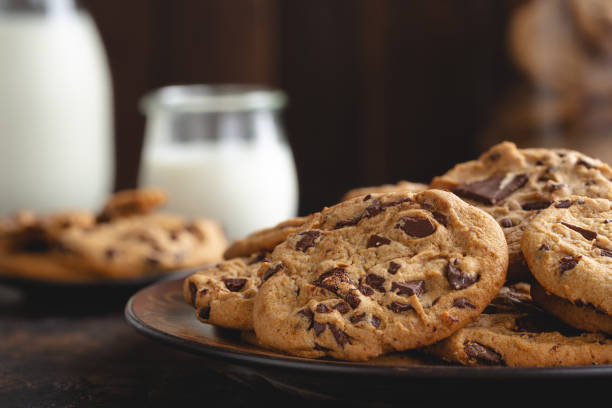

Home
Chocolate Chip Cookies Recipe

Description
Chocolate chip cookies are a classic treat loved by many.
They are soft and chewy with gooey chocolate chips throughout.
Perfect for satisfying your sweet tooth, these cookies are great
for any occasion, whether it's a casual snack or a special dessert.
This recipe is simple to follow and yields delicious results.
You can customize it by adding nuts or using different types of chocolate chips.
Enjoy them fresh out of the oven with a glass of milk or share them with friends and family.
Equipment
- Mixing bowl
- 3 Baking sheet
- Measuring cups and spoons
- Parchment paper
- Electric mixer (optional)
- Spatula
- Cooling rack
Ingredients
- 3 cups all-purpose flour
- 1 teaspoon baking soda
- 1 teaspoon salt
- 1 cup (2 sticks) butter softened
- 1 cup granulated suger
- 1 cup brown sugar packed
- 2 teaspoons vanilla extract
- 2 large eggs
- 2 cups Chocolate chips
Steps
- Preheat over to over 375 degrees Fahrenheit (190 degrees Celsius) Line three baking sheets
with parchment paper and set aside.
- In a bowl, mix flour, baking soda, and salt. Set aside.
- Cream together butter and sugar until combined
- Beat in eggs and vanilla until light
- Mix in the dry ingredients until combined
- Add Chocolate Chips and mix well
- Roll 2-3 tablespoons (Depending on how large you like your cookies) of dough at a time
into balls and place them on the prepared baking sheets about 2 inches apart.
- Bake in preheated oven for approximately 8-10 minutes. Take them out when they are just
barely starting to turn brown.
- Let them sit on the baking pan for 5 minutes before moving them to cooling rack.